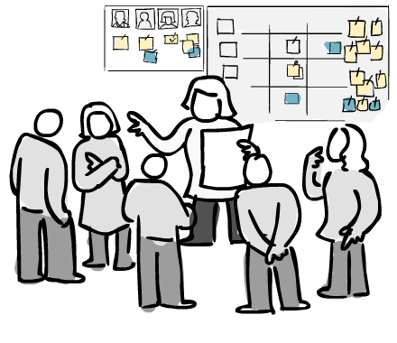

Scrum is a tool that gives your team and employees
the oportunity to plan their work in a more neat and structured way.

Roles
Each team member has his own role. In Scrum there are always three different roles; Product Owner, Scrum Master and the developers.
Daily Meetings
Daily meeting for a maximum of 15 minutes duration where each member of the team will have to answer three questions about what he did/will do and what obstacles he faces.
Sprints
In Scrum you will work by sprints, where every sprint should be completed under a specific period which can vary from weeks and up to months.